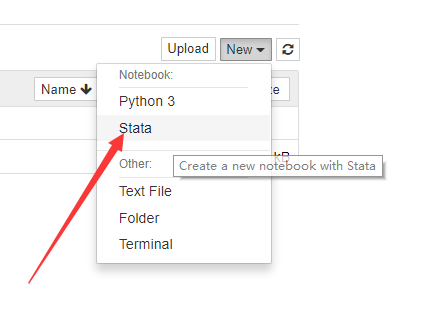

Stata是做生物统计/计量经济学的重要统计工具, 而python是做数据科学的利器, ipystata将stata和python结合在一起, 并能够在jupyter notebook中使用, 使得我们的工作效率大大提升。下面我们介绍一下, 如何安装stata, 如何在python中使用stata, 并进行stata的一些自动化操作。
目前来看, 在jupyternotebook中使用stata有两种方案:
- 方案一: 使用ipystata模块, 这个模块提供了
%%stata魔法函数, 可以把notebook的cell可以执行stata语句
- 方案二: 使用stata_kernel, 它实际上是一个notebook kernel, 使用stata kernel创建的notebook, 只能执行stata语句
下面我们分别介绍两种方案。
安装stata
安装stata非常简单, 基本上都是一路next, 不过我把一些需要注意的步骤贴在下面, 便于你选择:
下载
链接：https://pan.baidu.com/s/15cWE_4mxKmOiT08yhG8GXQ
提取码：zuaz
安装
双击安装:
注意选择stata/SE:
这里不用改, 只需要记住stata的安装目录, 后面会用到:
安装好了以后, 来到安装目录, 打开stata:
注意, 不需要注册:

最好不要让他自动更新:
输入注册码:
命令行注册
这是windows的安装方法, 如果你是linux, 也是类似的道理, 需要运行stata命令来注册。
使用管理员模式打开powershell:
工作目录调整到stata的安装目录, 然后执行命令.\StataSE-64.exe /Register
1
2
3
4
5
6
7
| PS C:\Users\syd> cd c:/
PS C:\> cd '.\Program Files (x86)\'
PS C:\Program Files (x86)> cd .\Starth\
PS C:\Program Files (x86)\Starth> cd ..
PS C:\Program Files (x86)> cd .\Stata15\
PS C:\Program Files (x86)\Stata15> .\StataSE-64.exe /Register
PS C:\Program Files (x86)\Stata15>
|
方案一: 使用stata魔法函数
安装python模块
(假设你已经安装好了jupyter notebook)
你需要使用pip安装两个模块:
‘’’
pip install ipystata
pip install psutil
‘’’
使用
自己随便新建一个notebook , 然后先设置stata的路径:
1
2
3
| import ipystata
from ipystata.config import config_stata
config_stata(r'C:\Program Files (x86)\Stata15\StataSE-64.exe')
|
然后你可以使用魔法函数%%stata运行一个stata的输出命令:
参数
把pandas.DataFrame发送给stata使用:
在python中提前定义好一个df(DataFrame), 然后:
或者把数据从stata输出到python:
为了调试, 运行stata的时候, 可以设置打开stata的操作界面:
输出图表:
参考
还有很多用法请参考github地址: https://github.com/TiesdeKok/ipystata/blob/master/ipystata/Example.ipynb
方案二: 使用stata kernel
安装方法
在powershell中执行下面两条命令即可:
1
2
| pip install stata_kernel
python -m stata_kernel.install
|
安装输出:
1
2
3
4
5
6
7
8
9
10
11
12
13
14
15
16
17
18
19
20
21
22
23
24
25
26
27
28
29
30
31
32
33
34
35
36
37
38
39
40
41
42
43
44
45
46
47
48
49
50
51
52
53
54
55
56
57
58
59
60
61
62
63
64
65
66
67
68
69
70
71
72
73
74
75
76
77
78
79
80
81
82
83
84
85
86
87
88
89
90
91
92
93
94
95
96
97
98
99
100
101
102
103
| Looking in indexes: https://mirrors.ustc.edu.cn/pypi/web/simple
Collecting stata_kernel
Downloading https://mirrors.ustc.edu.cn/pypi/web/packages/10/5c/b0bebe1214f09d50439622ad812fb165b5a8caba1fd0f83d51b67ebc7e4f/stata_kernel-1.5.5-py3-none-any.whl (60kB)
100% |████████████████████████████████| 61kB 2.2MB/s
Collecting requests>=2.19.1 (from stata_kernel)
Downloading https://mirrors.ustc.edu.cn/pypi/web/packages/65/47/7e02164a2a3db50ed6d8a6ab1d6d60b69c4c3fdf57a284257925dfc12bda/requests-2.19.1-py2.py3-none-any.whl (91kB)
100% |████████████████████████████████| 92kB 1.6MB/s
Collecting packaging>=17.1 (from stata_kernel)
Downloading https://mirrors.ustc.edu.cn/pypi/web/packages/89/d1/92e6df2e503a69df9faab187c684585f0136662c12bb1f36901d426f3fab/packaging-18.0-py2.py3-none-any.whl
Requirement already satisfied: jupyter>=1.0.0 in d:\mysites\deeplearning.ai-master\.env\lib\site-packages (from stata_kernel) (1.0.0)
Requirement already satisfied: pygments>=2.2.0 in d:\mysites\deeplearning.ai-master\.env\lib\site-packages (from stata_kernel) (2.2.0)
Requirement already satisfied: jupyter-client>=5.2.3 in d:\mysites\deeplearning.ai-master\.env\lib\site-packages (from stata_kernel) (5.2.3)
Requirement already satisfied: pywin32>=223; platform_system == "Windows" in d:\mysites\deeplearning.ai-master\.env\lib\site-packages (from stata_kernel) (224)
Collecting pexpect>=4.6.0 (from stata_kernel)
Downloading https://mirrors.ustc.edu.cn/pypi/web/packages/89/e6/b5a1de8b0cc4e07ca1b305a4fcc3f9806025c1b651ea302646341222f88b/pexpect-4.6.0-py2.py3-none-any.whl (57kB)
100% |████████████████████████████████| 61kB 20.5MB/s
Collecting pandas>=0.23.4 (from stata_kernel)
Downloading https://mirrors.ustc.edu.cn/pypi/web/packages/0e/67/def5bfaf4d3324fdb89048889ec523c0903c5efab1a64c8dbe0ac8eec13c/pandas-0.23.4-cp36-cp36m-win_amd64.whl (7.7MB)
100% |████████████████████████████████| 7.7MB 34.2MB/s
Collecting regex>=2018.7.11 (from stata_kernel)
Downloading https://mirrors.ustc.edu.cn/pypi/web/packages/15/a5/cdb73862c207dcbb2dec5a4c64f850314910c55097dfa12cdfc533892502/regex-2018.08.29-cp36-none-win_amd64.whl (255kB)
100% |████████████████████████████████| 256kB 1.9MB/s
Requirement already satisfied: ipykernel>=4.8.2 in d:\mysites\deeplearning.ai-master\.env\lib\site-packages (from stata_kernel) (4.8.2)
Collecting IPython>=6.5.0 (from stata_kernel)
Downloading https://mirrors.ustc.edu.cn/pypi/web/packages/a0/27/29d66ed395a5c2c3a912332d446a54e2bc3277c36b0bbd22bc71623e0193/ipython-7.0.1-py3-none-any.whl (760kB)
100% |████████████████████████████████| 768kB 3.5MB/s
Collecting beautifulsoup4>=4.6.3 (from stata_kernel)
Downloading https://mirrors.ustc.edu.cn/pypi/web/packages/21/0a/47fdf541c97fd9b6a610cb5fd518175308a7cc60569962e776ac52420387/beautifulsoup4-4.6.3-py3-none-any.whl (90kB)
100% |████████████████████████████████| 92kB 452kB/s
Collecting pillow>=5.2.0 (from stata_kernel)
Downloading https://mirrors.ustc.edu.cn/pypi/web/packages/bd/39/c76eaf781343162bdb1cf4854cb3bd5947a87ee44363e5acd6c48d69c4a1/Pillow-5.3.0-cp36-cp36m-win_amd64.whl (1.6MB)
100% |████████████████████████████████| 1.6MB 11.4MB/s
Requirement already satisfied: certifi>=2017.4.17 in d:\mysites\deeplearning.ai-master\.env\lib\site-packages (from requests>=2.19.1->stata_kernel) (2018.4.16)
Requirement already satisfied: urllib3<1.24,>=1.21.1 in d:\mysites\deeplearning.ai-master\.env\lib\site-packages (from requests>=2.19.1->stata_kernel) (1.22)
Requirement already satisfied: chardet<3.1.0,>=3.0.2 in d:\mysites\deeplearning.ai-master\.env\lib\site-packages (from requests>=2.19.1->stata_kernel) (3.0.4)
Requirement already satisfied: idna<2.8,>=2.5 in d:\mysites\deeplearning.ai-master\.env\lib\site-packages (from requests>=2.19.1->stata_kernel) (2.6)
Requirement already satisfied: six in d:\mysites\deeplearning.ai-master\.env\lib\site-packages (from packaging>=17.1->stata_kernel) (1.11.0)
Requirement already satisfied: pyparsing>=2.0.2 in d:\mysites\deeplearning.ai-master\.env\lib\site-packages (from packaging>=17.1->stata_kernel) (2.2.0)
Requirement already satisfied: notebook in d:\mysites\deeplearning.ai-master\.env\lib\site-packages (from jupyter>=1.0.0->stata_kernel) (5.5.0)
Requirement already satisfied: ipywidgets in d:\mysites\deeplearning.ai-master\.env\lib\site-packages (from jupyter>=1.0.0->stata_kernel) (7.2.1)
Requirement already satisfied: jupyter-console in d:\mysites\deeplearning.ai-master\.env\lib\site-packages (from jupyter>=1.0.0->stata_kernel) (5.2.0)
Requirement already satisfied: nbconvert in d:\mysites\deeplearning.ai-master\.env\lib\site-packages (from jupyter>=1.0.0->stata_kernel) (5.3.1)
Requirement already satisfied: qtconsole in d:\mysites\deeplearning.ai-master\.env\lib\site-packages (from jupyter>=1.0.0->stata_kernel) (4.3.1)
Requirement already satisfied: python-dateutil>=2.1 in d:\mysites\deeplearning.ai-master\.env\lib\site-packages (from jupyter-client>=5.2.3->stata_kernel) (2.7.3)
Requirement already satisfied: pyzmq>=13 in d:\mysites\deeplearning.ai-master\.env\lib\site-packages (from jupyter-client>=5.2.3->stata_kernel) (17.0.0)
Requirement already satisfied: traitlets in d:\mysites\deeplearning.ai-master\.env\lib\site-packages (from jupyter-client>=5.2.3->stata_kernel) (4.3.2)
Requirement already satisfied: jupyter-core in d:\mysites\deeplearning.ai-master\.env\lib\site-packages (from jupyter-client>=5.2.3->stata_kernel) (4.4.0)
Requirement already satisfied: tornado>=4.1 in d:\mysites\deeplearning.ai-master\.env\lib\site-packages (from jupyter-client>=5.2.3->stata_kernel) (5.0.2)
Collecting ptyprocess>=0.5 (from pexpect>=4.6.0->stata_kernel)
Downloading https://mirrors.ustc.edu.cn/pypi/web/packages/d1/29/605c2cc68a9992d18dada28206eeada56ea4bd07a239669da41674648b6f/ptyprocess-0.6.0-py2.py3-none-any.whl
Requirement already satisfied: pytz>=2011k in d:\mysites\deeplearning.ai-master\.env\lib\site-packages (from pandas>=0.23.4->stata_kernel) (2018.4)
Requirement already satisfied: numpy>=1.9.0 in d:\mysites\deeplearning.ai-master\.env\lib\site-packages (from pandas>=0.23.4->stata_kernel) (1.14.1)
Requirement already satisfied: colorama; sys_platform == "win32" in d:\mysites\deeplearning.ai-master\.env\lib\site-packages (from IPython>=6.5.0->stata_kernel) (0.3.9)
Requirement already satisfied: decorator in d:\mysites\deeplearning.ai-master\.env\lib\site-packages (from IPython>=6.5.0->stata_kernel) (4.3.0)
Requirement already satisfied: pickleshare in d:\mysites\deeplearning.ai-master\.env\lib\site-packages (from IPython>=6.5.0->stata_kernel) (0.7.4)
Requirement already satisfied: simplegeneric>0.8 in d:\mysites\deeplearning.ai-master\.env\lib\site-packages (from IPython>=6.5.0->stata_kernel) (0.8.1)
Requirement already satisfied: setuptools>=18.5 in d:\mysites\deeplearning.ai-master\.env\lib\site-packages (from IPython>=6.5.0->stata_kernel) (28.8.0)
Requirement already satisfied: jedi>=0.10 in d:\mysites\deeplearning.ai-master\.env\lib\site-packages (from IPython>=6.5.0->stata_kernel) (0.12.0)
Collecting prompt-toolkit<2.1.0,>=2.0.0 (from IPython>=6.5.0->stata_kernel)
Downloading https://mirrors.ustc.edu.cn/pypi/web/packages/e5/c5/f1ee6698bdcf615f171a77e81ca70293b16a6d82285f1760b388b4348263/prompt_toolkit-2.0.5-py3-none-any.whl (334kB)
100% |████████████████████████████████| 337kB 12.8MB/s
Requirement already satisfied: backcall in d:\mysites\deeplearning.ai-master\.env\lib\site-packages (from IPython>=6.5.0->stata_kernel) (0.1.0)
Requirement already satisfied: Send2Trash in d:\mysites\deeplearning.ai-master\.env\lib\site-packages (from notebook->jupyter>=1.0.0->stata_kernel) (1.5.0)
Requirement already satisfied: terminado>=0.8.1 in d:\mysites\deeplearning.ai-master\.env\lib\site-packages (from notebook->jupyter>=1.0.0->stata_kernel) (0.8.1)
Requirement already satisfied: jinja2 in d:\mysites\deeplearning.ai-master\.env\lib\site-packages (from notebook->jupyter>=1.0.0->stata_kernel) (2.10)
Requirement already satisfied: nbformat in d:\mysites\deeplearning.ai-master\.env\lib\site-packages (from notebook->jupyter>=1.0.0->stata_kernel) (4.4.0)
Requirement already satisfied: ipython-genutils in d:\mysites\deeplearning.ai-master\.env\lib\site-packages (from notebook->jupyter>=1.0.0->stata_kernel) (0.2.0)
Requirement already satisfied: widgetsnbextension~=3.2.0 in d:\mysites\deeplearning.ai-master\.env\lib\site-packages (from ipywidgets->jupyter>=1.0.0->stata_kernel) (3.2.1)
Requirement already satisfied: mistune>=0.7.4 in d:\mysites\deeplearning.ai-master\.env\lib\site-packages (from nbconvert->jupyter>=1.0.0->stata_kernel) (0.8.3)
Requirement already satisfied: bleach in d:\mysites\deeplearning.ai-master\.env\lib\site-packages (from nbconvert->jupyter>=1.0.0->stata_kernel) (1.5.0)
Requirement already satisfied: entrypoints>=0.2.2 in d:\mysites\deeplearning.ai-master\.env\lib\site-packages (from nbconvert->jupyter>=1.0.0->stata_kernel) (0.2.3)
Requirement already satisfied: testpath in d:\mysites\deeplearning.ai-master\.env\lib\site-packages (from nbconvert->jupyter>=1.0.0->stata_kernel) (0.3.1)
Requirement already satisfied: pandocfilters>=1.4.1 in d:\mysites\deeplearning.ai-master\.env\lib\site-packages (from nbconvert->jupyter>=1.0.0->stata_kernel) (1.4.2)
Requirement already satisfied: parso>=0.2.0 in d:\mysites\deeplearning.ai-master\.env\lib\site-packages (from jedi>=0.10->IPython>=6.5.0->stata_kernel) (0.2.0)
Requirement already satisfied: wcwidth in d:\mysites\deeplearning.ai-master\.env\lib\site-packages (from prompt-toolkit<2.1.0,>=2.0.0->IPython>=6.5.0->stata_kernel) (0.1.7)
Requirement already satisfied: pywinpty>=0.5; os_name == "nt" in d:\mysites\deeplearning.ai-master\.env\lib\site-packages (from terminado>=0.8.1->notebook->jupyter>=1.0.0->stata_kernel) (0.5.1)
Requirement already satisfied: MarkupSafe>=0.23 in d:\mysites\deeplearning.ai-master\.env\lib\site-packages (from jinja2->notebook->jupyter>=1.0.0->stata_kernel) (1.0)
Requirement already satisfied: jsonschema!=2.5.0,>=2.4 in d:\mysites\deeplearning.ai-master\.env\lib\site-packages (from nbformat->notebook->jupyter>=1.0.0->stata_kernel) (2.6.0)
Requirement already satisfied: html5lib!=0.9999,!=0.99999,<0.99999999,>=0.999 in d:\mysites\deeplearning.ai-master\.env\lib\site-packages (from bleach->nbconvert->jupyter>=1.0.0->stata_kernel) (0.9999999)
spacy 2.0.11 has requirement regex==2017.4.5, but you'll have regex 2018.8.29 which is incompatible.
jupyter-console 5.2.0 has requirement prompt-toolkit<2.0.0,>=1.0.0, but you'll have prompt-toolkit 2.0.5 which is incompatible.
Installing collected packages: requests, packaging, ptyprocess, pexpect, pandas, regex, prompt-toolkit, IPython, beautifulsoup4, pillow, stata-kernel
Found existing installation: requests 2.18.4
Uninstalling requests-2.18.4:
Successfully uninstalled requests-2.18.4
Found existing installation: pandas 0.23.0
Uninstalling pandas-0.23.0:
Successfully uninstalled pandas-0.23.0
Found existing installation: regex 2017.4.5
Uninstalling regex-2017.4.5:
Successfully uninstalled regex-2017.4.5
Found existing installation: prompt-toolkit 1.0.15
Uninstalling prompt-toolkit-1.0.15:
Successfully uninstalled prompt-toolkit-1.0.15
Found existing installation: ipython 6.4.0
Uninstalling ipython-6.4.0:
Successfully uninstalled ipython-6.4.0
Found existing installation: Pillow 5.1.0
Uninstalling Pillow-5.1.0:
Successfully uninstalled Pillow-5.1.0
Successfully installed IPython-7.0.1 beautifulsoup4-4.6.3 packaging-18.0 pandas-0.23.4 pexpect-4.6.0 pillow-5.3.0 prompt-toolkit-2.0.5 ptyprocess-0.6.0 regex-2018.8.29 requests-2.19.1 stata-kernel-1.5.5
You are using pip version 18.0, however version 18.1 is available.
You should consider upgrading via the 'python -m pip install --upgrade pip' command.
|
使用方法
打开你的notebook:
然后, 创建一个statanotebook:

最后, 你就可以在cell中写stata命令了:

教程到这里就结束了, 希望大家关注mlln.cn, 以后还会有stata的教程。